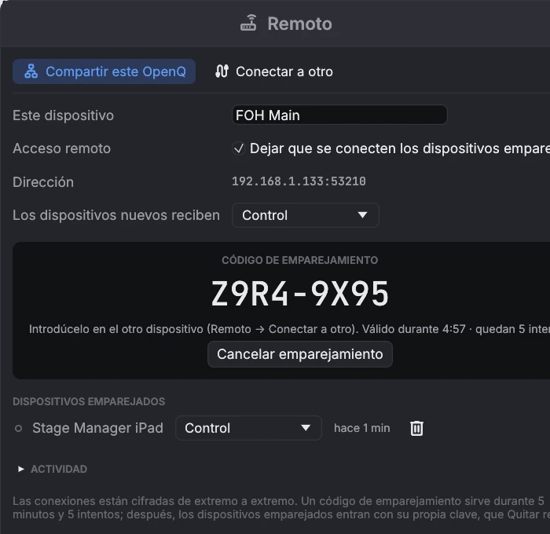

Control remoto y red
6.1Dispositivos remotos
Un segundo ordenador con OpnQ en la misma red puede seguir el espectáculo y llevarlo. Puede ser el portátil del regidor o una tableta en la mesa técnica. El ordenador que lleva el espectáculo es el dispositivo principal, y hace toda la reproducción. El otro dispositivo muestra su lista de cues, cabezal, cues en marcha y medidores, y le envía GO y otras órdenes.
Emparejar un dispositivo
- En el dispositivo principal, abre , marca
Dejar que se conecten los dispositivos emparejados y haz clic en Emparejar un dispositivo nuevo…. Aparece un código como
C9XR-E9HJ. - En el otro dispositivo, abre , haz clic en Buscar y elige el dispositivo principal. Si la búsqueda no encuentra nada, escribe su dirección, que aparece en la ventana Remoto del dispositivo principal.
- Introduce el código y haz clic en Conectar. A partir de la primera vez, conectar no necesita código.

Roles
| Rol | El dispositivo puede |
|---|---|
| Solo ver | Seguir el espectáculo: lista de cues, cabezal, cues en marcha y medidores. |
| Control | Además, pulsar GO, parar, pausar y reanudar, mover el cabezal e iniciar o parar cues sueltas. |
| Control y edición | Además, editar el espectáculo. Los cambios se guardan en el dispositivo principal. |
Ajusta el rol que reciben los dispositivos nuevos, y cambia el de cualquier dispositivo, en la ventana Remoto del dispositivo principal. Los cambios se aplican al momento. Quitar desconecta un dispositivo enseguida, y tiene que volver a emparejarse para reconectar. Cuando un dispositivo se desconecta, recupera su propio espectáculo. Los archivos de medios se quedan en el dispositivo principal, así que añádelos allí. Varios dispositivos pueden editar a la vez: las cues que uno añade, mueve o borra se juntan con el espectáculo tal como está en el dispositivo principal, así que no deshacen lo que los demás hicieron mientras tanto.
Las conexiones van cifradas y autenticadas. Un código de emparejamiento vale 5 minutos y 5 intentos, y quien grabe el tráfico de red no puede deducirlo a partir de la grabación. Después del emparejamiento, cada dispositivo entra con su propia clave secreta. Una dirección que falla una y otra vez se bloquea 5 minutos. La lista Actividad muestra las conexiones y los intentos rechazados.
El acceso remoto usa el puerto TCP 53200, y la búsqueda
usa el puerto UDP 53201 y mDNS (UDP 5353). Un cortafuegos en el dispositivo principal tiene que
permitirlos. La búsqueda también encuentra un dispositivo principal en otra subred o VLAN si la red deja pasar mDNS entre ellas
(una «pasarela mDNS» o reflector en los conmutadores o el router). En una wifi de invitados la búsqueda puede no encontrar nada;
escribir la dirección sigue funcionando.
6.2OSC y cues de red
Activa Control remoto OSC en . Escucha en el puerto UDP 53000 por defecto. Las cues se identifican por su número.
| Dirección | Acción |
|---|---|
/go | GO |
/stop · /panic | Parar todo con el fundido · parar todo al instante |
/pause · /resume | Pausar todo · reanudar todo |
/playhead/next · /playhead/previous | Mover el cabezal |
/playhead/4.2 | Poner el cabezal en la cue 4.2 |
/cue/4.2/start | También stop, pause, resume, devamp |
/light/executor/2/level 0.5 | Nivel del ejecutor 2; también go, release, flash (1 = pulsar, 0 = soltar). /light/grandmaster 0.8, /light/blackout, /light/release, /light/tap |
Una cue Red envía un mensaje OSC a otros equipos. Ajusta el host, el puerto, la dirección
(por ejemplo /eos/cue/12/fire) y los argumentos. Los argumentos se separan con espacios: los números se envían como
números y el texto entre comillas como texto.
Pon Enviar en Texto para equipos que aceptan órdenes en texto (proyectores, mezcladores de
vídeo, servidores de medios): escribe el texto con escapes para los caracteres de control (\r retorno,
\n salto de línea, \t, \0, \xHH cualquier byte, \\ una
barra invertida). UDP envía un datagrama; TCP mantiene una conexión abierta con el destino
y la vuelve a abrir si el otro extremo la cierra. OSC también puede ir por TCP (con tramas, como dice OSC 1.1). Un mensaje
que no se puede enviar se muestra en rojo en la cue y en Función → Avisos.